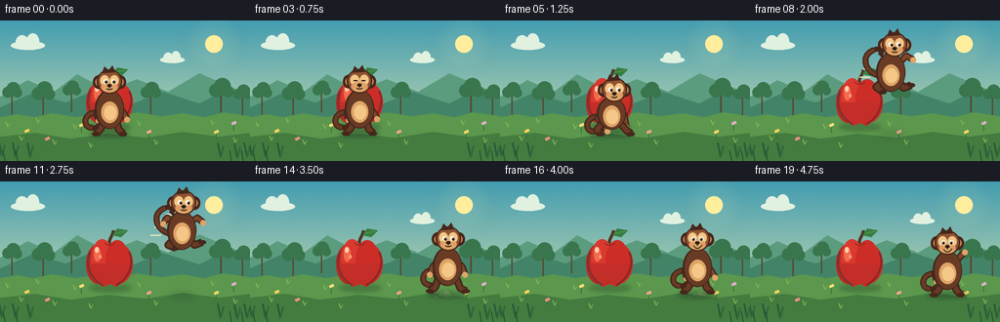
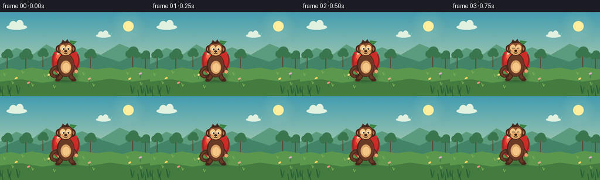

CODING AGENTS AS PIXEL WORLD MODELS
traex/GPT-5.6-Sol · dynamic_spatial_relationship_0060
点击播放 · 原生 RGB 像素
逐轮保存的候选
回放视频、检查图与代码变化。
每份候选均可单独播放。实际图片检查记录在下方工具轨迹中。
候选 01播放与检查图
点击播放 · 原生 RGB 像素


展开代码变化
--- 上一保存版本
+++ 本次保存版本
@@ -0,0 +1,277 @@
+from pathlib import Path
+import math
+import numpy as np
+from PIL import Image, ImageDraw, ImageFilter
+import artifact_io
+
+# Hand-built vector animation, rendered at 4x and downsampled.
+W, H, N = 256, 144, 20
+S = 4
+WW, HH = W*S, H*S
+rng = np.random.default_rng(60)
+
+def sc(v):
+ return int(round(v*S))
+
+def box(b):
+ return tuple(sc(v) for v in b)
+
+def pts(p):
+ return [(sc(x), sc(y)) for x, y in p]
+
+def line(draw, xy, fill, width, joint='curve'):
+ draw.line(pts(xy), fill=fill, width=max(1,sc(width)), joint=joint)
+
+def ellipse(draw, b, fill, outline=None, width=1):
+ draw.ellipse(box(b), fill=fill, outline=outline, width=sc(width) if outline else 1)
+
+def polygon(draw, p, fill):
+ draw.polygon(pts(p), fill=fill)
+
+def bezier(draw, p0, p1, p2, p3, fill, width):
+ q=[]
+ for t in np.linspace(0,1,30):
+ u=1-t
+ x=u**3*p0[0]+3*u*u*t*p1[0]+3*u*t*t*p2[0]+t**3*p3[0]
+ y=u**3*p0[1]+3*u*u*t*p1[1]+3*u*t*t*p2[1]+t**3*p3[1]
+ q.append((x,y))
+ line(draw,q,fill,width)
+
+def make_background():
+ # Warm turquoise sky gradient.
+ yy=np.linspace(0,1,HH)[:,None,None]
+ top=np.array([67,157,177],float)[None,None,:]
+ bot=np.array([224,229,174],float)[None,None,:]
+ arr=np.repeat(top*(1-yy)+bot*yy, WW, axis=1)
+ # Very subtle fixed film grain for tactile richness.
+ grain=rng.normal(0,1.15,(HH,WW,1))
+ arr=np.clip(arr+grain,0,255).astype(np.uint8)
+ im=Image.fromarray(arr,'RGB')
+ d=ImageDraw.Draw(im)
+ # Sun and soft halo.
+ halo=Image.new('RGBA',(WW,HH),(0,0,0,0)); hd=ImageDraw.Draw(halo)
+ for r,a in [(30,8),(24,12),(18,18)]:
+ hd.ellipse(box((219-r,24-r,219+r,24+r)),fill=(255,244,179,a))
+ halo=halo.filter(ImageFilter.GaussianBlur(sc(6)))
+ im=Image.alpha_composite(im.convert('RGBA'),halo).convert('RGB'); d=ImageDraw.Draw(im)
+ ellipse(d,(210,15,228,33),(255,238,157))
+ # Clouds.
+ for cloud in [((28,25),1.0),((176,40),.72)]:
+ (cx,cy),z=cloud
+ col=(225,241,224)
+ ellipse(d,(cx-17*z,cy-4*z,cx+18*z,cy+5*z),col)
+ ellipse(d,(cx-12*z,cy-10*z,cx+1*z,cy+4*z),col)
+ ellipse(d,(cx-1*z,cy-12*z,cx+12*z,cy+5*z),col)
+ # Far layered hills.
+ polygon(d,[(0,78),(28,61),(55,73),(79,55),(111,72),(140,60),(172,73),(204,54),(256,76),(256,144),(0,144)],(91,156,126))
+ polygon(d,[(0,89),(34,74),(67,84),(100,70),(134,86),(167,73),(204,85),(235,69),(256,78),(256,144),(0,144)],(67,132,105))
+ # Distant orchard silhouettes.
+ for x,y,z in [(12,72,.7),(44,73,.82),(73,70,.65),(154,72,.72),(226,70,.86),(248,74,.66)]:
+ line(d,[(x,y+4),(x,y+24)],(85,79,52),2.2*z)
+ for dx,dy,rr in [(-6,2,8),(2,-3,10),(8,3,7)]:
+ ellipse(d,(x+(dx-rr)*z,y+(dy-rr)*z,x+(dx+rr)*z,y+(dy+rr)*z),(57,118,78))
+ # Main meadow, bands and irregular grass edge.
+ polygon(d,[(0,99),(18,96),(34,99),(54,95),(78,99),(96,96),(118,99),(140,94),(165,98),(187,95),(209,99),(229,94),(256,98),(256,144),(0,144)],(91,151,76))
+ polygon(d,[(0,119),(36,115),(72,121),(110,116),(150,120),(187,114),(224,119),(256,115),(256,144),(0,144)],(68,124,64))
+ # Ground highlights and small meadow details.
+ for x,y in [(8,109),(22,123),(39,105),(56,127),(77,111),(93,130),(143,108),(160,127),(218,107),(241,125)]:
+ line(d,[(x,y),(x-2,y-5)],(140,183,87),1)
+ line(d,[(x,y),(x+2,y-4)],(118,173,79),1)
+ for x,y,c in [(27,112,(251,210,89)),(48,120,(235,146,129)),(83,106,(247,222,121)),(152,113,(240,165,142)),(221,113,(248,213,103)),(239,104,(226,174,202))]:
+ line(d,[(x,y+3),(x,y+9)],(61,116,61),1)
+ ellipse(d,(x-2,y,x+1,y+3),c); ellipse(d,(x,y-1,x+3,y+2),c)
+ # Foreground tufts frame the action.
+ for x in [2,16,31,226,243,253]:
+ base=141-(x%3)
+ line(d,[(x,base),(x-3,base-15)],(42,94,55),2)
+ line(d,[(x,base),(x+3,base-12)],(48,105,58),2)
+ return im
+
+BG=make_background()
+
+def draw_apple(im, frame):
+ d=ImageDraw.Draw(im)
+ ax, ay = 112, 84
+ # Ground shadow situates apple behind the monkey.
+ sh=Image.new('RGBA',(WW,HH),(0,0,0,0)); sd=ImageDraw.Draw(sh)
+ ellipse(sd,(91,105,134,113),(24,57,42,75))
+ sh=sh.filter(ImageFilter.GaussianBlur(sc(2.1)))
+ im.alpha_composite(sh)
+ d=ImageDraw.Draw(im)
+ # Stem behind fruit and leafy crown.
+ bezier(d,(112,65),(111,58),(116,55),(116,50),(77,55,36),3.3)
+ polygon(d,[(115,55),(120,48),(131,50),(124,57)],(54,126,66))
+ line(d,[(118,53),(128,51)],(111,160,73),.8)
+ # Apple lobes and bottom dimple: saturated but with painterly layers.
+ ellipse(d,(88,64,113,105),(181,43,39))
+ ellipse(d,(105,63,136,105),(199,49,42))
+ ellipse(d,(93,59,116,102),(218,57,47))
+ ellipse(d,(108,60,132,102),(204,46,39))
+ polygon(d,[(91,84),(95,99),(105,108),(113,105),(119,108),(130,99),(135,84)],(196,46,40))
+ # Soft shaded rim.
+ bezier(d,(92,72),(87,83),(91,99),(105,106),(132,47,43),2)
+ bezier(d,(132,72),(138,85),(131,100),(119,106),(142,35,37),2)
+ # Golden reflected light and sharp shine.
+ ellipse(d,(96,67,103,82),(242,107,76))
+ ellipse(d,(97,67,101,73),(255,207,170))
+ ellipse(d,(101,75,104,79),(247,147,112))
+ # Dimple seam.
+ bezier(d,(107,63),(110,66),(114,66),(118,63),(146,35,34),1)
+
+def dust_cloud(im, x, y, strength, direction=1):
+ if strength<=0: return
+ lay=Image.new('RGBA',(WW,HH),(0,0,0,0)); d=ImageDraw.Draw(lay)
+ blobs=[(0,0,5),(-6*direction,1,3),(-11*direction,3,2.3),(5*direction,2,2.5)]
+ for i,(dx,dy,r) in enumerate(blobs):
+ rr=r*(.55+.55*strength)
+ ellipse(d,(x+dx-rr,y+dy-rr,x+dx+rr,y+dy+rr),(211,210,159,int(125*strength/(1+i*.12))))
+ lay=lay.filter(ImageFilter.GaussianBlur(sc(.65)))
+ im.alpha_composite(lay)
+
+def monkey_pose(i):
+ # Return center x, ground baseline, phase, vertical offset.
+ if i <= 3:
+ return 112, 116 + .5*math.sin(i*1.6), 'idle', 0
+ if i == 4: return 113,116,'ready',0
+ if i == 5: return 114,116,'crouch',0
+ # Carefully authored ballistic path, visibly crossing to apple's right.
+ path={6:(119,105,'launch'),7:(130,91,'air1'),8:(144,78,'air1'),
+ 9:(159,69,'apex'),10:(174,68,'apex'),11:(186,75,'air2'),
+ 12:(195,87,'air2'),13:(200,100,'air2'),14:(202,112,'land'),
+ 15:(202,116,'squash'),16:(202,113,'rebound'),17:(202,116,'idle'),
+ 18:(202,116,'idle'),19:(202,116,'idle')}
+ x,base,ph=path[i]
+ return x,base,ph,0
+
+def draw_monkey(im, i):
+ x,base,phase,_=monkey_pose(i)
+ d=ImageDraw.Draw(im)
+ # Contact shadow shrinks and softens as monkey rises.
+ airborne=max(0,116-base)
+ sw=max(7,21-airborne*.18); alpha=int(max(22,95-airborne*1.3))
+ sh=Image.new('RGBA',(WW,HH),(0,0,0,0)); sd=ImageDraw.Draw(sh)
+ ellipse(sd,(x-sw,116-2.2,x+sw,116+3),(20,49,36,alpha))
+ sh=sh.filter(ImageFilter.GaussianBlur(sc(2.2+airborne*.025)))
+ im.alpha_composite(sh)
+ d=ImageDraw.Draw(im)
+ # Squash/stretch and pose controls.
+ squash=1.0; stretch=1.0
+ if phase=='crouch': squash=.84
+ if phase=='launch': stretch=1.10
+ if phase=='squash': squash=.78
+ if phase=='rebound': stretch=1.06
+ body_y=base-25*squash
+ head_y=base-52*squash-(stretch-1)*11
+ lean={'ready':2,'crouch':3,'launch':4,'air1':4,'apex':3,'air2':2,'land':1}.get(phase,0)
+ hx=x+lean
+ dark=(70,39,27); mid=(105,59,37); brown=(125,72,43); fur=(143,83,49)
+ tan=(222,165,103); light=(244,199,135); ink=(45,29,23)
+ # Tail is behind body, with action-dependent flow.
+ if phase in ('air1','apex','air2','launch'):
+ bezier(d,(x-9,body_y+4),(x-27,body_y+2),(x-32,body_y-18),(x-17,body_y-23),dark,6.2)
+ bezier(d,(x-17,body_y-23),(x-10,body_y-26),(x-8,body_y-20),(x-11,body_y-17),dark,5.3)
+ bezier(d,(x-9,body_y+4),(x-27,body_y+2),(x-32,body_y-18),(x-17,body_y-23),mid,3.5)
+ else:
+ bezier(d,(x-9,body_y+3),(x-27,body_y+1),(x-29,body_y+18),(x-18,body_y+19),dark,6.3)
+ bezier(d,(x-18,body_y+19),(x-8,body_y+20),(x-9,body_y+9),(x-14,body_y+11),dark,5.3)
+ bezier(d,(x-9,body_y+3),(x-27,body_y+1),(x-29,body_y+18),(x-18,body_y+19),mid,3.4)
+ # Limbs behind torso. Coordinates intentionally change silhouette by phase.
+ if phase in ('crouch','ready'):
+ arms=[((x-7,body_y-7),(x-14,body_y+5),(x-4,base-3)),((x+7,body_y-8),(x+13,body_y+2),(x+15,base-7))]
+ legs=[((x-7,body_y+8),(x-15,base-4),(x-11,base)),((x+7,body_y+8),(x+16,base-3),(x+20,base))]
+ elif phase in ('launch','air1'):
+ arms=[((x-7,body_y-7),(x-3,body_y-18),(x+6,body_y-20)),((x+7,body_y-8),(x+16,body_y-17),(x+23,body_y-13))]
+ legs=[((x-7,body_y+8),(x-15,body_y+15),(x-8,body_y+20)),((x+7,body_y+8),(x+13,body_y+16),(x+21,body_y+13))]
+ elif phase in ('apex','air2'):
+ arms=[((x-7,body_y-8),(x-15,body_y-13),(x-19,body_y-7)),((x+7,body_y-8),(x+16,body_y-13),(x+22,body_y-8))]
+ legs=[((x-7,body_y+8),(x-14,body_y+15),(x-6,body_y+18)),((x+7,body_y+8),(x+13,body_y+15),(x+21,body_y+12))]
+ elif phase in ('land','squash'):
+ arms=[((x-7,body_y-8),(x-15,body_y),(x-18,body_y+8)),((x+7,body_y-8),(x+15,body_y),(x+18,body_y+8))]
+ legs=[((x-7,body_y+7),(x-13,base-3),(x-18,base)),((x+7,body_y+7),(x+13,base-3),(x+19,base))]
+ else:
+ wave = i>=17
+ arms=[((x-7,body_y-7),(x-13,body_y+3),(x-11,body_y+11)),
+ ((x+7,body_y-7),(x+14,body_y-15 if wave else body_y+3),(x+18,body_y-19 if wave else body_y+10))]
+ legs=[((x-6,body_y+8),(x-9,base-5),(x-14,base)),((x+6,body_y+8),(x+9,base-5),(x+14,base))]
+ for a,b,c in arms:
+ line(d,[a,b,c],dark,7)
+ line(d,[a,b,c],brown,4)
+ ellipse(d,(c[0]-3,c[1]-2.5,c[0]+3,c[1]+3.5),tan)
+ for a,b,c in legs:
+ line(d,[a,b,c],dark,8)
+ line(d,[a,b,c],mid,4.5)
+ ellipse(d,(c[0]-4,c[1]-2,c[0]+4,c[1]+2.5),dark)
+ # Torso, dimensional belly and chest tuft.
+ bw=15*(1.08 if phase=='squash' else 1)
+ bh=20*squash
+ ellipse(d,(x-bw,body_y-bh,x+bw,body_y+bh),dark)
+ ellipse(d,(x-bw+2,body_y-bh+1,x+bw-1,body_y+bh-1),mid)
+ ellipse(d,(x-8.5,body_y-8,x+9,body_y+14),tan)
+ ellipse(d,(x-5.5,body_y-4,x+7,body_y+11),light)
+ # Fur crest connects head and body.
+ polygon(d,[(x-7,body_y-15),(x-3,body_y-22),(x,body_y-17),(x+4,body_y-23),(x+8,body_y-14)],mid)
+ # Ears behind head.
+ ellipse(d,(hx-17,head_y-8,hx-5,head_y+6),dark)
+ ellipse(d,(hx+5,head_y-8,hx+17,head_y+6),dark)
+ ellipse(d,(hx-14.5,head_y-5,hx-7,head_y+3),(208,137,86))
+ ellipse(d,(hx+7,head_y-5,hx+14.5,head_y+3),(208,137,86))
+ # Head and upper-face mask.
+ ellipse(d,(hx-13,head_y-14,hx+13,head_y+11),dark)
+ ellipse(d,(hx-11.5,head_y-13,hx+11.5,head_y+10),fur)
+ # Tuft silhouette.
+ polygon(d,[(hx-8,head_y-10),(hx-5,head_y-17),(hx-1,head_y-13),(hx+3,head_y-18),(hx+6,head_y-11)],dark)
+ # Face mask and muzzle.
+ ellipse(d,(hx-9.5,head_y-8,hx-.3,head_y+3),light)
+ ellipse(d,(hx+.3,head_y-8,hx+9.5,head_y+3),light)
+ ellipse(d,(hx-8.5,head_y-1,hx+8.5,head_y+9.5),tan)
+ # Eyes look toward direction of travel; final gaze is back toward apple.
+ look = -1.0 if i>=16 else (1.1 if i>=4 else .2)
+ blink = (i==3)
+ if blink:
+ line(d,[(hx-6,head_y-2),(hx-2,head_y-2)],ink,1.2)
+ line(d,[(hx+2,head_y-2),(hx+6,head_y-2)],ink,1.2)
+ else:
+ ellipse(d,(hx-6.3,head_y-4,hx-1.8,head_y+1),(255,248,223))
+ ellipse(d,(hx+1.8,head_y-4,hx+6.3,head_y+1),(255,248,223))
+ ellipse(d,(hx-4.8+look*.45,head_y-2.8,hx-2.2+look*.45,head_y+.4),ink)
+ ellipse(d,(hx+3.2+look*.45,head_y-2.8,hx+5.8+look*.45,head_y+.4),ink)
+ ellipse(d,(hx-4.2+look*.45,head_y-2.5,hx-3.5+look*.45,head_y-1.7),(255,255,245))
+ ellipse(d,(hx+3.8+look*.45,head_y-2.5,hx+4.5+look*.45,head_y-1.7),(255,255,245))
+ ellipse(d,(hx-2.2,head_y+1,hx+2.2,head_y+4.2),ink)
+ # Friendly smile, stronger after landing.
+ line(d,[(hx,head_y+4),(hx,head_y+5.6)],ink,.8)
+ if i>=15:
+ bezier(d,(hx-4,head_y+5),(hx-2,head_y+9),(hx+2,head_y+9),(hx+5,head_y+4.5),ink,1.1)
+ else:
+ bezier(d,(hx-3,head_y+5.5),(hx-1,head_y+7),(hx+1,head_y+7),(hx+3,head_y+5.5),ink,.9)
+ # tiny cheek warmth
+ ellipse(d,(hx-8,head_y+3,hx-5.5,head_y+5),(235,143,100))
+ ellipse(d,(hx+5.5,head_y+3,hx+8,head_y+5),(235,143,100))
+
+
+def make_frame(i):
+ im=BG.convert('RGBA')
+ draw_apple(im,i) # apple is behind, establishing "in front of"
+ # Sparse movement accents, only during rapid jump.
+ if i in (7,8,9,10,11,12):
+ d=ImageDraw.Draw(im)
+ x,base,_,_=monkey_pose(i)
+ fade=80 if i in (8,9,10) else 55
+ for k in range(2):
+ yy=base-28+k*8
+ line(d,[(x-28-k*4,yy),(x-19-k*2,yy)],(236,234,189,fade),1.2)
+ if i==6: dust_cloud(im,112,114,.75,-1)
+ if i==7: dust_cloud(im,112,115,.42,-1)
+ if i==14: dust_cloud(im,201,115,.48,1)
+ if i==15: dust_cloud(im,202,114,.95,1)
+ if i==16: dust_cloud(im,205,115,.38,1)
+ draw_monkey(im,i) # composited last: unmistakably foreground
+ # A few front grass blades reinforce depth without hiding subjects.
+ d=ImageDraw.Draw(im)
+ for gx in [5,18,237,249]:
+ line(d,[(gx,144),(gx-2,133)],(38,87,51),1.2)
+ return np.asarray(im.convert('RGB').resize((W,H),Image.Resampling.LANCZOS),dtype=np.uint8)
+
+frames=np.stack([make_frame(i) for i in range(N)],axis=0)
+assert frames.shape==(20,144,256,3) and frames.dtype==np.uint8
+artifact_io.save(frames,Path(__file__).resolve().parent)
可观测工具轨迹
实际执行的命令与返回图片。
命令 1exit 0
/bin/bash -lc "cat prompt.txt && printf '\\n--- GENERATION_RULES ---\\n' && cat GENERATION_RULES.md && printf '\\n--- TASK_SPEC ---\\n' && cat task_spec.json"
命令 2exit 0
/bin/bash -lc "find . -maxdepth 2 -type f -printf '%p\\n' | sort && printf '\\nTOOLS\\n' && command -v ffmpeg || true && command -v blender || true && command -v python3 || true"
命令 3exit 0
/bin/bash -lc 'cat artifact_io.py'
命令 4exit 0
/bin/bash -lc "python3 - <<'PY' import importlib.util for m in ['numpy','PIL','cv2','imageio','matplotlib']: print(m, bool(importlib.util.find_spec(m))) PY"
命令 5exit 0
/bin/bash -lc "cat > generate.py <<'PY'
from pathlib import Path
import math
import numpy as np
from PIL import Image, ImageDraw, ImageFilter
import artifact_io
# Hand-built vector animation, rendered at 4x and downsampled.
W, H, N = 256, 144, 20
S = 4
WW, HH = W*S, H*S
rng = np.random.default_rng(60)
def sc(v):
return int(round(v*S))
def box(b):
return tuple(sc(v) for v in b)
def pts(p):
return [(sc(x), sc(y)) for x, y in p]
def line(draw, xy, fill, width, joint='curve'):
draw.line(pts(xy), fill=fill, width=max(1,sc(width)), joint=joint)
def ellipse(draw, b, fill, outline=None, width=1):
draw.ellipse(box(b), fill=fill, outline=outline, width=sc(width) if outline else 1)
def polygon(draw, p, fill):
draw.polygon(pts(p), fill=fill)
def bezier(draw, p0, p1, p2, p3, fill, width):
q=[]
for t in np.linspace(0,1,30):
u=1-t
x=u**3*p0[0]+3*u*u*t*p1[0]+3*u*t*t*p2[0]+t**3*p3[0]
y=u**3*p0[1]+3*u*u*t*p1[1]+3*u*t*t*p2[1]+t**3*p3[1]
q.append((x,y))
line(draw,q,fill,width)
def make_background():
# Warm turquoise sky gradient.
yy=np.linspace(0,1,HH)[:,None,None]
top=np.array([67,157,177],float)[None,None,:]
bot=np.array([224,229,174],float)[None,None,:]
arr=np.repeat(top*(1-yy)+bot*yy, WW, axis=1)
# Very subtle fixed film grain for tactile richness.
grain=rng.normal(0,1.15,(HH,WW,1))
arr=np.clip(arr+grain,0,255).astype(np.uint8)
im=Image.fromarray(arr,'RGB')
d=ImageDraw.Draw(im)
# Sun and soft halo.
halo=Image.new('RGBA',(WW,HH),(0,0,0,0)); hd=ImageDraw.Draw(halo)
for r,a in [(30,8),(24,12),(18,18)]:
hd.ellipse(box((219-r,24-r,219+r,24+r)),fill=(255,244,179,a))
halo=halo.filter(ImageFilter.GaussianBlur(sc(6)))
im=Image.alpha_composite(im.convert('RGBA'),halo).convert('RGB'); d=ImageDraw.Draw(im)
ellipse(d,(210,15,228,33),(255,238,157))
# Clouds.
for cloud in [((28,25),1.0),((176,40),.72)]:
(cx,cy),z=cloud
col=(225,241,224)
ellipse(d,(cx-17*z,cy-4*z,cx+18*z,cy+5*z),col)
ellipse(d,(cx-12*z,cy-10*z,cx+1*z,cy+4*z),col)
ellipse(d,(cx-1*z,cy-12*z,cx+12*z,cy+5*z),col)
# Far layered hills.
polygon(d,[(0,78),(28,61),(55,73),(79,55),(111,72),(140,60),(172,73),(204,54),(256,76),(256,144),(0,144)],(91,156,126))
polygon(d,[(0,89),(34,74),(67,84),(100,70),(134,86),(167,73),(204,85),(235,69),(256,78),(256,144),(0,144)],(67,132,105))
# Distant orchard silhouettes.
for x,y,z in [(12,72,.7),(44,73,.82),(73,70,.65),(154,72,.72),(226,70,.86),(248,74,.66)]:
line(d,[(x,y+4),(x,y+24)],(85,79,52),2.2*z)
for dx,dy,rr in [(-6,2,8),(2,-3,10),(8,3,7)]:
ellipse(d,(x+(dx-rr)*z,y+(dy-rr)*z,x+(dx+rr)*z,y+(dy+rr)*z),(57,118,78))
# Main meadow, bands and irregular grass edge.
polygon(d,[(0,99),(18,96),(34,99),(54,95),(78,99),(96,96),(118,99),(140,94),(165,98),(187,95),(209,99),(229,94),(256,98),(256,144),(0,144)],(91,151,76))
polygon(d,[(0,119),(36,115),(72,121),(110,116),(150,120),(187,114),(224,119),(256,115),(256,144),(0,144)],(68,124,64))
# Ground highlights and small meadow details.
for x,y in [(8,109),(22,123),(39,105),(56,127),(77,111),(93,130),(143,108),(160,127),(218,107),(241,125)]:
line(d,[(x,y),(x-2,y-5)],(140,183,87),1)
line(d,[(x,y),(x+2,y-4)],(118,173,79),1)
for x,y,c in [(27,112,(251,210,89)),(48,120,(235,146,129)),(83,106,(247,222,121)),(152,113,(240,165,142)),(221,113,(248,213,103)),(239,104,(226,174,202))]:
line(d,[(x,y+3),(x,y+9)],(61,116,61),1)
ellipse(d,(x-2,y,x+1,y+3),c); ellipse(d,(x,y-1,x+3,y+2),c)
# Foreground tufts frame the action.
for x in [2,16,31,226,243,253]:
base=141-(x%3)
line(d,[(x,base),(x-3,base-15)],(42,94,55),2)
line(d,[(x,base),(x+3,base-12)],(48,105,58),2)
return im
BG=make_background()
def draw_apple(im, frame):
d=ImageDraw.Draw(im)
ax, ay = 112, 84
# Ground shadow situates apple behind the monkey.
sh=Image.new('RGBA',(WW,HH),(0,0,0,0)); sd=ImageDraw.Draw(sh)
ellipse(sd,(91,105,134,113),(24,57,42,75))
sh=sh.filter(ImageFilter.GaussianBlur(sc(2.1)))
im.alpha_composite(sh)
d=ImageDraw.Draw(im)
# Stem behind fruit and leafy crown.
bezier(d,(112,65),(111,58),(116,55),(116,50),(77,55,36),3.3)
polygon(d,[(115,55),(120,48),(131,50),(124,57)],(54,126,66))
line(d,[(118,53),(128,51)],(111,160,73),.8)
# Apple lobes and bottom dimple: saturated but with painterly layers.
ellipse(d,(88,64,113,105),(181,43,39))
ellipse(d,(105,63,136,105),(199,49,42))
ellipse(d,(93,59,116,102),(218,57,47))
ellipse(d,(108,60,132,102),(204,46,39))
polygon(d,[(91,84),(95,99),(105,108),(113,105),(119,108),(130,99),(135,84)],(196,46,40))
# Soft shaded rim.
bezier(d,(92,72),(87,83),(91,99),(105,106),(132,47,43),2)
bezier(d,(132,72),(138,85),(131,100),(119,106),(142,35,37),2)
# Golden reflected light and sharp shine.
ellipse(d,(96,67,103,82),(242,107,76))
ellipse(d,(97,67,101,73),(255,207,170))
ellipse(d,(101,75,104,79),(247,147,112))
# Dimple seam.
bezier(d,(107,63),(110,66),(114,66),(118,63),(146,35,34),1)
def dust_cloud(im, x, y, strength, direction=1):
if strength<=0: return
lay=Image.new('RGBA',(WW,HH),(0,0,0,0)); d=ImageDraw.Draw(lay)
blobs=[(0,0,5),(-6*direction,1,3),(-11*direction,3,2.3),(5*direction,2,2.5)]
for i,(dx,dy,r) in enumerate(blobs):
rr=r*(.55+.55*strength)
ellipse(d,(x+dx-rr,y+dy-rr,x+dx+rr,y+dy+rr),(211,210,159,int(125*strength/(1+i*.12))))
lay=lay.filter(ImageFilter.GaussianBlur(sc(.65)))
im.alpha_composite(lay)
def monkey_pose(i):
# Return center x, ground baseline, phase, vertical offset.
if i <= 3:
return 112, 116 + .5*math.sin(i*1.6), 'idle', 0
if i == 4: return 113,116,'ready',0
if i == 5: return 114,116,'crouch',0
# Carefully authored ballistic path, visibly crossing to apple's right.
path={6:(119,105,'launch'),7:(130,91,'air1'),8:(144,78,'air1'),
9:(159,69,'apex'),10:(174,68,'apex'),11:(186,75,'air2'),
12:(195,87,'air2'),13:(200,100,'air2'),14:(202,112,'land'),
15:(202,116,'squash'),16:(202,113,'rebound'),17:(202,116,'idle'),
18:(202,116,'idle'),19:(202,116,'idle')}
x,base,ph=path[i]
return x,base,ph,0
def draw_monkey(im, i):
x,base,phase,_=monkey_pose(i)
d=ImageDraw.Draw(im)
# Contact shadow shrinks and softens as monkey rises.
airborne=max(0,116-base)
sw=max(7,21-airborne*.18); alpha=int(max(22,95-airborne*1.3))
sh=Image.new('RGBA',(WW,HH),(0,0,0,0)); sd=ImageDraw.Draw(sh)
ellipse(sd,(x-sw,116-2.2,x+sw,116+3),(20,49,36,alpha))
sh=sh.filter(ImageFilter.GaussianBlur(sc(2.2+airborne*.025)))
im.alpha_composite(sh)
d=ImageDraw.Draw(im)
# Squash/stretch and pose controls.
squash=1.0; stretch=1.0
if phase=='crouch': squash=.84
if phase=='launch': stretch=1.10
if phase=='squash': squash=.78
if phase=='rebound': stretch=1.06
body_y=base-25*squash
head_y=base-52*squash-(stretch-1)*11
lean={'ready':2,'crouch':3,'launch':4,'air1':4,'apex':3,'air2':2,'land':1}.get(phase,0)
hx=x+lean
dark=(70,39,27); mid=(105,59,37); brown=(125,72,43); fur=(143,83,49)
tan=(222,165,103); light=(244,199,135); ink=(45,29,23)
# Tail is behind body, with action-dependent flow.
if phase in ('air1','apex','air2','launch'):
bezier(d,(x-9,body_y+4),(x-27,body_y+2),(x-32,body_y-18),(x-17,body_y-23),dark,6.2)
bezier(d,(x-17,body_y-23),(x-10,body_y-26),(x-8,body_y-20),(x-11,body_y-17),dark,5.3)
bezier(d,(x-9,body_y+4),(x-27,body_y+2),(x-32,body_y-18),(x-17,body_y-23),mid,3.5)
else:
bezier(d,(x-9,body_y+3),(x-27,body_y+1),(x-29,body_y+18),(x-18,body_y+19),dark,6.3)
bezier(d,(x-18,body_y+19),(x-8,body_y+20),(x-9,body_y+9),(x-14,body_y+11),dark,5.3)
bezier(d,(x-9,body_y+3),(x-27,body_y+1),(x-29,body_y+18),(x-18,body_y+19),mid,3.4)
# Limbs behind torso. Coordinates intentionally change silhouette by phase.
if phase in ('crouch','ready'):
arms=[((x-7,body_y-7),(x-14,body_y+5),(x-4,base-3)),((x+7,body_y-8),(x+13,body_y+2),(x+15,base-7))]
legs=[((x-7,body_y+8),(x-15,base-4),(x-11,base)),((x+7,body_y+8),(x+16,base-3),(x+20,base))]
elif phase in ('launch','air1'):
arms=[((x-7,body_y-7),(x-3,body_y-18),(x+6,body_y-20)),((x+7,body_y-8),(x+16,body_y-17),(x+23,body_y-13))]
legs=[((x-7,body_y+8),(x-15,body_y+15),(x-8,body_y+20)),((x+7,body_y+8),(x+13,body_y+16),(x+21,body_y+13))]
elif phase in ('apex','air2'):
arms=[((x-7,body_y-8),(x-15,body_y-13),(x-19,body_y-7)),((x+7,body_y-8),(x+16,body_y-13),(x+22,body_y-8))]
legs=[((x-7,body_y+8),(x-14,body_y+15),(x-6,body_y+18)),((x+7,body_y+8),(x+13,body_y+15),(x+21,body_y+12))]
elif phase in ('land','squash'):
arms=[((x-7,body_y-8),(x-15,body_y),(x-18,body_y+8)),((x+7,body_y-8),(x+15,body_y),(x+18,body_y+8))]
legs=[((x-7,body_y+7),(x-13,base-3),(x-18,base)),((x+7,body_y+7),(x+13,base-3),(x+19,base))]
else:
wave = i>=17
arms=[((x-7,body_y-7),(x-13,body_y+3),(x-11,body_y+11)),
((x+7,body_y-7),(x+14,body_y-15 if wave else body_y+3),(x+18,body_y-19 if wave else body_y+10))]
legs=[((x-6,body_y+8),(x-9,base-5),(x-14,base)),((x+6,body_y+8),(x+9,base-5),(x+14,base))]
for a,b,c in arms:
line(d,[a,b,c],dark,7)
line(d,[a,b,c],brown,4)
ellipse(d,(c[0]-3,c[1]-2.5,c[0]+3,c[1]+3.5),tan)
for a,b,c in legs:
line(d,[a,b,c],dark,8)
line(d,[a,b,c],mid,4.5)
ellipse(d,(c[0]-4,c[1]-2,c[0]+4,c[1]+2.5),dark)
# Torso, dimensional belly and chest tuft.
bw=15*(1.08 if phase=='squash' else 1)
bh=20*squash
ellipse(d,(x-bw,body_y-bh,x+bw,body_y+bh),dark)
ellipse(d,(x-bw+2,body_y-bh+1,x+bw-1,body_y+bh-1),mid)
ellipse(d,(x-8.5,body_y-8,x+9,body_y+14),tan)
ellipse(d,(x-5.5,body_y-4,x+7,body_y+11),light)
# Fur crest connects head and body.
polygon(d,[(x-7,body_y-15),(x-3,body_y-22),(x,body_y-17),(x+4,body_y-23),(x+8,body_y-14)],mid)
# Ears behind head.
ellipse(d,(hx-17,head_y-8,hx-5,head_y+6),dark)
ellipse(d,(hx+5,head_y-8,hx+17,head_y+6),dark)
ellipse(d,(hx-14.5,head_y-5,hx-7,head_y+3),(208,137,86))
ellipse(d,(hx+7,head_y-5,hx+14.5,head_y+3),(208,137,86))
# Head and upper-face mask.
ellipse(d,(hx-13,head_y-14,hx+13,head_y+11),dark)
ellipse(d,(hx-11.5,head_y-13,hx+11.5,head_y+10),fur)
# Tuft silhouette.
polygon(d,[(hx-8,head_y-10),(hx-5,head_y-17),(hx-1,head_y-13),(hx+3,head_y-18),(hx+6,head_y-11)],dark)
# Face mask and muzzle.
ellipse(d,(hx-9.5,head_y-8,hx-.3,head_y+3),light)
ellipse(d,(hx+.3,head_y-8,hx+9.5,head_y+3),light)
ellipse(d,(hx-8.5,head_y-1,hx+8.5,head_y+9.5),tan)
# Eyes look toward direction of travel; final gaze is back toward apple.
look = -1.0 if i>=16 else (1.1 if i>=4 else .2)
blink = (i==3)
if blink:
line(d,[(hx-6,head_y-2),(hx-2,head_y-2)],ink,1.2)
line(d,[(hx+2,head_y-2),(hx+6,head_y-2)],ink,1.2)
else:
ellipse(d,(hx-6.3,head_y-4,hx-1.8,head_y+1),(255,248,223))
ellipse(d,(hx+1.8,head_y-4,hx+6.3,head_y+1),(255,248,223))
ellipse(d,(hx-4.8+look*.45,head_y-2.8,hx-2.2+look*.45,head_y+.4),ink)
ellipse(d,(hx+3.2+look*.45,head_y-2.8,hx+5.8+look*.45,head_y+.4),ink)
ellipse(d,(hx-4.2+look*.45,head_y-2.5,hx-3.5+look*.45,head_y-1.7),(255,255,245))
ellipse(d,(hx+3.8+look*.45,head_y-2.5,hx+4.5+look*.45,head_y-1.7),(255,255,245))
ellipse(d,(hx-2.2,head_y+1,hx+2.2,head_y+4.2),ink)
# Friendly smile, stronger after landing.
line(d,[(hx,head_y+4),(hx,head_y+5.6)],ink,.8)
if i>=15:
bezier(d,(hx-4,head_y+5),(hx-2,head_y+9),(hx+2,head_y+9),(hx+5,head_y+4.5),ink,1.1)
else:
bezier(d,(hx-3,head_y+5.5),(hx-1,head_y+7),(hx+1,head_y+7),(hx+3,head_y+5.5),ink,.9)
# tiny cheek warmth
ellipse(d,(hx-8,head_y+3,hx-5.5,head_y+5),(235,143,100))
ellipse(d,(hx+5.5,head_y+3,hx+8,head_y+5),(235,143,100))
def make_frame(i):
im=BG.convert('RGBA')
draw_apple(im,i) # apple is behind, establishing \"in front of\"
# Sparse movement accents, only during rapid jump.
if i in (7,8,9,10,11,12):
d=ImageDraw.Draw(im)
x,base,_,_=monkey_pose(i)
fade=80 if i in (8,9,10) else 55
for k in range(2):
yy=base-28+k*8
line(d,[(x-28-k*4,yy),(x-19-k*2,yy)],(236,234,189,fade),1.2)
if i==6: dust_cloud(im,112,114,.75,-1)
if i==7: dust_cloud(im,112,115,.42,-1)
if i==14: dust_cloud(im,201,115,.48,1)
if i==15: dust_cloud(im,202,114,.95,1)
if i==16: dust_cloud(im,205,115,.38,1)
draw_monkey(im,i) # composited last: unmistakably foreground
# A few front grass blades reinforce depth without hiding subjects.
d=ImageDraw.Draw(im)
for gx in [5,18,237,249]:
line(d,[(gx,144),(gx-2,133)],(38,87,51),1.2)
return np.asarray(im.convert('RGB').resize((W,H),Image.Resampling.LANCZOS),dtype=np.uint8)
frames=np.stack([make_frame(i) for i in range(N)],axis=0)
assert frames.shape==(20,144,256,3) and frames.dtype==np.uint8
artifact_io.save(frames,Path(__file__).resolve().parent)
PY
python3 generate.py
ls -lh pixels.npz inspection.png frames/00.png frames/19.png index.html"命令 6exit 0
/bin/bash -lc 'sha256sum frames/*.png pixels.npz | tail -n 3'
命令 7exit 0
/bin/bash -lc "python3 - <<'PY'
from PIL import Image
import numpy as np
from pathlib import Path
fs=[]
for p in sorted(Path('frames').glob('*.png')):
a=np.asarray(Image.open(p).convert('RGB')); fs.append(a)
a=np.stack(fs)
print('shape',a.shape,'dtype',a.dtype,'range',int(a.min()),int(a.max()))
print('mean_rgb',np.round(a.mean((0,1,2)),2).tolist())
print('changed_pixels_per_transition', [int(np.any(a[j]"'!=a[j-1],axis=2).sum()) for j in range(1,len(a))])
z=np.load('"'pixels.npz')['pixels']
print('pixels_tensor',z.shape,z.dtype)
print('required_files',all(Path(x).exists() for x in ['generate.py','pixels.npz','index.html','inspection.png']))
PY"保存候选 1 份；完成命令 7 次；可验证图片返回 0 张。原始 API 响应与完整日志保留在本地。